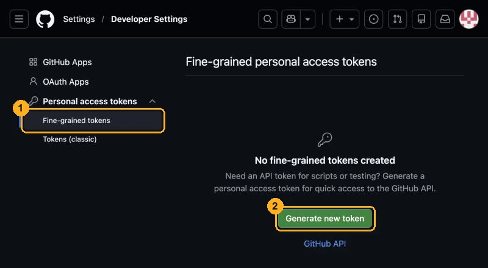
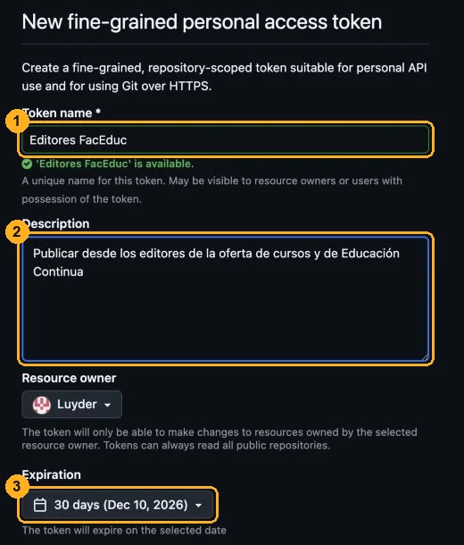
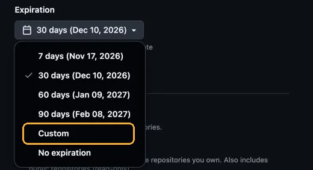
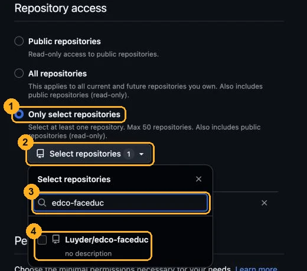
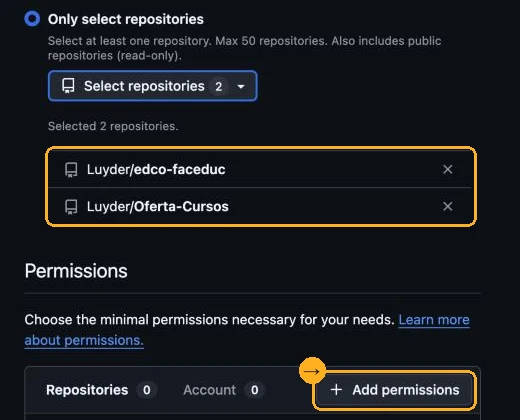
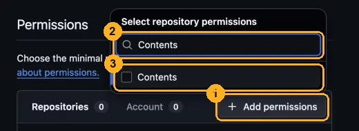
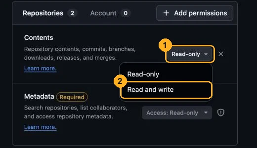
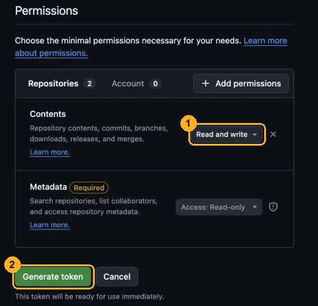
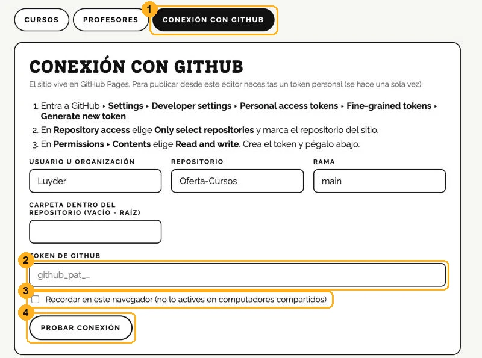

Cómo crear el token de GitHub
El token es una llave que le permite al editor guardar los cambios en el sitio. Se crea una sola vez (y se renueva cuando vence). Toma unos 3 minutos.
Entra a github.com con la cuenta Luyder y sigue los pasos. Si ya iniciaste sesión, puedes ir directo al formulario:
Abrir el formulario de token nuevo ↗-
Abre la página de tokens
En GitHub: foto de perfil ▸ Settings ▸ Developer settings (al final del menú izquierdo) ▸ Personal access tokens ▸ Fine-grained tokens. Luego haz clic en Generate new token.

① Fine-grained tokens · ② Generate new token -
Ponle nombre y descripción
En Token name escribe
Editores FacEduc. La descripción es opcional. En Resource owner debe aparecer Luyder (viene así por defecto).
① Nombre · ② Descripción · ③ Vencimiento (siguiente paso) -
Elige cuándo vence
Abre Expiration y elige Custom para poner una fecha, por ejemplo el final del año académico (máximo un año). No elijas «No expiration»: si el token se pierde, quedaría válido para siempre.
Cuando venza, el editor mostrará «el token no es válido o venció»: basta con repetir este tutorial y pegar el nuevo.

-
Elige los repositorios
En Repository access marca Only select repositories. Abre Select repositories, escribe el nombre y marca la casilla. Hazlo con los dos:
Oferta-Cursosyedco-faceduc.
① Only select repositories · ② Select repositories · ③ Buscar · ④ Marcar -
Comprueba que estén los dos
Cierra el selector con la × de su esquina. Debe decir Selected 2 repositories con
edco-faceducyOferta-Cursos. Luego, en Permissions, haz clic en Add permissions.
-
Agrega los permisos «Contents» y «Actions»
En el buscador escribe
Contentsy marca la casilla. Luego borra el texto, escribeActionsy márcala también (la usa el botón «Actualizar desde el portal» del editor de Educación Continua). Para cerrar el menú haz clic en una zona vacía de la página.Ojo: no uses la tecla Esc en este formulario: GitHub la toma como «Cancelar» y se pierde todo lo que llenaste.

① Add permissions · ② Escribe Contents · ③ Márcalo. Repite ② y ③ con Actions. -
Cámbialos a «Read and write»
Junto a Contents aparece Read-only. Ábrelo y elige Read and write (sin esto el editor no puede guardar). Haz lo mismo con Actions.

-
Revisa y genera el token
Deben quedar Contents y Actions en Read and write (en la imagen solo se ve Contents). Metadata (con «Access: Read-only») aparece sola porque es obligatoria; déjala así. Haz clic en Generate token (y confirma si GitHub lo pide).

① Read and write · ② Generate token -
Copia el token
GitHub muestra el token una sola vez. Es un texto largo que empieza así:
github_pat_11ABCDEFG0…
Cópialo con el botón de copiar que aparece a su lado. Si cierras la página sin copiarlo, no se puede recuperar: bórralo y crea otro.
Trátalo como una contraseña. Lo más seguro es que quien lo creó lo pegue directamente en el editor del computador donde se va a editar (paso siguiente), sin enviarlo a nadie. Si de verdad hay que hacerlo llegar a otra persona, usa un gestor de contraseñas para compartirlo; evita el correo, los chats y los documentos, porque ahí queda guardado.
-
Pégalo en el editor
Abre el editor (
…/admin.html) y entra a la pestaña Conexión con GitHub. En el sitio publicado, usuario y repositorio ya vienen llenos.Pega el token en Token de GitHub. Marca Recordar en este navegador solo si es un computador personal. Luego haz clic en Probar conexión: debe decir «Conexión correcta». El botón de la barra negra cambia a Publicar en el sitio.

① Conexión con GitHub · ② Token · ③ Recordar (opcional) · ④ Probar conexión. El editor de Educación Continua tiene la misma pestaña.
Si algo sale mal
- «El token no es válido o venció»
- Venció o se copió incompleto. Crea uno nuevo (pasos 1 a 9) y pégalo en el editor (paso 10).
- «El token no tiene permiso de escritura en el repositorio»
- Falta Read and write en Contents (o en Actions, si el aviso lo menciona), o el repositorio no quedó marcado. En GitHub ▸ Fine-grained tokens, haz clic en el token ▸ Edit y corrígelo; no hace falta crear otro.
- «No se encontró el repositorio, la rama o la carpeta»
- Revisa en la pestaña Conexión con GitHub que el usuario sea
Luydery el repositorio sea el del sitio (Oferta-Cursosoedco-faceduc), ramamain. - Se perdió el computador o el token se compartió por error
- En GitHub ▸ Fine-grained tokens, borra el token (Delete). Deja de funcionar de inmediato. Luego crea uno nuevo.